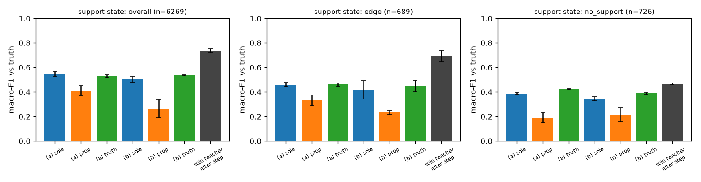

Support state from vision: a weak result
Will the next foot be fully supported, half over a gap, or not in contact at all? A second small head on the same ViT features tries to say so before the step. It barely beats answering the most common state every time.
In short
- Vision reads support state poorly. Macro-F1 0.53-0.55 before the step, against 0.736 for the sole teacher after the step.
- Its accuracy is a trivial baseline. Vision is right on 0.94-0.95 of steps, and always answering "full" scores 0.943.
- On hidden gaps, vision is below a trivial answer. Where a sheet hides the gaps between planks, always answering "partial" scores 0.685 accuracy. Vision scores 0.652, the sole teacher 0.715.
- Vision calls plank floors "partial" from their look. That is why it finds partial support more often than the sole on honest planks (recall 0.864 against 0.673), and why it loses that edge when the gaps are hidden.
- Sole labels teach this head better than joints and IMU labels, and as well as truth: 0.548 against 0.411 and 0.529.
What was done
- Truth. The simulator's support state of the stepping foot 0.1 s after touchdown. None: no contact (force along the sole normal of 2 N or less). Partial: contact with fewer than 90 % of the sole's 24 probe points over supporting ground, for example over a gap or a step edge. Full: the rest.
- Vision. The same frozen DINOv3 features and crop as the floor-class head (the vision head), with a second small head of three outputs, weighted 1 / 3 / 1. It sees the best frame before contact.
- Labels. From the sole teacher, from the joints and IMU teacher (the two teachers), or from truth. (a) Labels from steps of G113 and G80, two ordinary flat-foot walking policies the teachers were trained on; (b) labels from SONIC, human-like heel-to-toe walking, which the teachers never saw.
- Comparison. The sole teacher reads the stance after contact.
- Scores. Macro-F1 over the support states present in each subset, mean ± sd over 3 seeds, on held-out textures. A difference counts as real when it is larger than twice the seed spread.
How rare the states are
| Test subset | None | Partial | Full |
|---|---|---|---|
| All honest test steps (6,269) | 54 | 303 | 5,912 |
| Edge-class test steps (689) | 5 | 303 | 381 |
| Hidden gaps, no_support (726) | 2 | 497 | 227 |
Reading the table. "None" barely exists (under 1 % of steps) and is not a usable class. Partial support exists almost only on edge terrain: in the whole step-1 data, 12,365 of 12,372 partial steps (the source report says 12,364 of 12,371; the independent re-check's count is used). The no_support scenes are plank floors under a sheet that exists only for the camera: it lies 2 mm below the plank tops, hides the gaps, looks solid and gives no support.
All test steps
| Labels for the vision head | Macro-F1 | Accuracy |
|---|---|---|
| (a) sole teacher | 0.548 ± 0.020 | 0.950 ± 0.011 |
| (a) joints + IMU teacher | 0.411 ± 0.041 | 0.945 ± 0.002 |
| (a) simulator truth | 0.529 ± 0.011 | 0.940 ± 0.007 |
| (b) sole teacher | 0.504 ± 0.022 | 0.927 ± 0.012 |
| (b) joints + IMU teacher | 0.264 ± 0.073 | 0.652 ± 0.322 |
| (b) simulator truth | 0.537 ± 0.004 | 0.945 ± 0.002 |
| Shuffled labels (control) | 0.341 ± 0.020 | 0.913 ± 0.031 |
| Always "full" (trivial baseline) | – | 0.943 |
| Sole teacher, after the step | 0.736 ± 0.017 | 0.961 ± 0.003 |

Reading the table. Accuracy says almost nothing here: nearly every step is fully supported, so the (a) heads land at 0.94-0.95, the same as always answering "full" (0.943). Macro-F1 shows the difference. Sole labels beat joints and IMU labels, really, in both settings ((a) 0.548 against 0.411, (b) 0.504 against 0.264), and are as good as truth (neither 0.548 against 0.529 nor 0.504 against 0.537 is a real difference). The sole teacher after the step is really above every vision head. Chance for three states is 0.333; the shuffled control sits at 0.341.
Planks and hidden gaps
| Source | Edge steps, macro-F1 | Edge steps, accuracy | Hidden gaps, macro-F1 | Hidden gaps, accuracy |
|---|---|---|---|---|
| Vision, (a) truth labels | 0.462 ± 0.013 | 0.691 ± 0.018 | 0.423 ± 0.003 | 0.652 ± 0.012 |
| Vision, (a) sole labels | 0.460 ± 0.018 | 0.690 ± 0.025 | 0.388 ± 0.008 | 0.589 ± 0.015 |
| Vision, (a) joints + IMU labels | 0.332 ± 0.044 | 0.598 ± 0.025 | 0.191 ± 0.041 | 0.343 ± 0.038 |
| Always "partial" (trivial baseline) | – | – | – | 0.685 |
| Sole teacher, after the step | 0.693 ± 0.047 | 0.802 ± 0.009 | 0.466 ± 0.007 | 0.715 ± 0.009 |
Reading the table. On honest plank floors the sole after the step is far ahead (0.693 against 0.462). Under a sheet that hides the gaps, everything drops, and the sole is really better than vision by 4 points of macro-F1 and 6 of accuracy. But answering "partial" every time already gives 0.685 accuracy on these scenes: vision is below that trivial answer, and the sole teacher is only 3 points above it.
Finding partial support
Share of truly partial steps that each source calls partial.
| Source | Edge steps (303 partial) | Hidden gaps (497 partial) |
|---|---|---|
| Vision, (a) truth labels | 0.864 ± 0.008 | 0.642 ± 0.051 |
| Vision, (a) sole labels | 0.860 ± 0.025 | 0.525 ± 0.038 |
| Vision, (a) joints + IMU labels | 0.177 ± 0.095 | 0.050 ± 0.067 |
| Sole teacher, after the step | 0.673 ± 0.017 | 0.702 ± 0.005 |
Reading the table. On honest planks vision finds more partial steps than the sole does, because it calls plank ground "partial" from its look. When a sheet hides the gaps, vision's recall falls (0.864 to 0.642 with truth labels, 0.525 with sole labels), and the sole keeps 0.702. Vision fails where the sole succeeds in direction, and moderately in size. It does not fail completely, because the planks are still visible.
Independent re-check
- Every number reproduced. The truth column of the prediction files equals the dataset's support state; the counts per state are exact.
- Holds: sole labels beat joints and IMU labels; sole labels are as good as truth; vision's partial recall falls from edge to hidden gaps.
- Holds with caveats: the overall vision numbers (accuracy equals the "always full" baseline); the hidden-gap comparison (vision is below the "always partial" baseline of 0.685, the sole only 3 points above); the sole teacher's 0.736 (the SONIC caveat above).
- Could not verify: that the edge-loaded-foot gap of the dataset (a foot loaded on its front edge reads as no contact) falls inside the rare "none" state.
Full list: independent re-check of experiment 1.
What it means and limits
- Vision before the step does not give a usable support state here. Most of what it gets right comes from the most common state and from the look of planks.
- The sole after the step is better but not good: 0.736 overall, and only 3 points above a trivial answer on hidden gaps.
- "None" is not learnable from 54 test steps, and the contact flag behind it misses an edge-loaded foot (dataset page).
- Simulation, three test textures per class, and a crop placed from the true landing pose, as for the floor-class head.
Scores: macro-F1 over the support states present in each subset, against simulator truth on held-out textures, mean ± sd over 3 seeds; accuracy where stated. Related: the dataset, the two teachers, the vision head, independent re-check. Model: DINOv3 ViT-B/16. Textures: ambientCG, CC0.